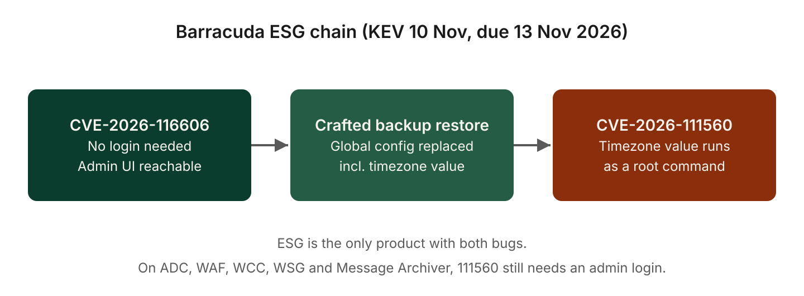

Barracuda ESG Auth Bypass and Command Injection Are One Incident
On 10 November 2026, CISA added six actively exploited flaws to the Known Exploited Vulnerabilities catalog. Two of them belong together, and Barracuda had already said on 9 November that it saw exploitation against a small number of organizations: CVE-2026-116606 on Barracuda Email Security Gateway, and CVE-2026-111560 across multiple Barracuda products including ESG.

If you only open a ticket for “patch ESG,” you are fighting half the match. Barracuda’s advisory says that if exploited in combination, the two bugs let an attacker bypass authorization and obtain root on the device. The federal due date for both is 13 November 2026, a three day clock from the KEV listing, and both entries carry a forensic triage requirement. Non federal teams should treat that as a signal of urgency, not a courtesy.
Barracuda has not said which CVE was used in the attacks it saw, whether the two were chained, or published indicators of compromise. A public proof of concept was already circulating before the KEV listing. Plan as if the chain is in use.
What the advisories actually say
CVE-2026-116606 is an authentication bypass on Barracuda Email Security Gateway. An unauthenticated remote attacker can invoke a configuration-import function and restore a crafted, compatible backup archive. That lands as unauthorized modification of the appliance’s global configuration. The CVE record from Mandiant (MNDT-2026-0042) lists ESG firmware earlier than 9.4.0.030 as affected. Barracuda clarified on 5 November that no login is needed, but the attacker must be able to reach the administrative UI. That makes management plane exposure the deciding factor.
CVE-2026-111560 is OS command injection affecting ESG, Load Balancer, ADC, Message Archiver, WAF Control Center, Web Application Firewall, and Web Security Gateway. An authenticated administrator can inject OS commands that execute with root privileges when a crafted timezone value is later processed. The root cause is shell metacharacters that are not neutralized in the timezone field (MNDT-2026-0041).
Scope matters here. The bypass affects ESG only. On Load Balancer ADC, WAF, WAF Control Center, Web Security Gateway and Message Archiver, CVE-2026-111560 still requires an administrator account. Only ESG gives an outsider both halves of the chain.
Read that sequence the way an attacker does. Bypass auth, restore a backup whose configuration carries a poisoned timezone value, then let the appliance run that value as root. That is not my guess at the wiring: public research describes the restored data including a timezone value the appliance later executes as a root shell command. In jiu jitsu terms, the bypass is the grip fight and the command injection is the finish. Defending only one grip is how you get submitted.
I am not publishing exploit steps. You do not need them to prioritize this. Active exploitation evidence is why CISA listed both entries.
This is also not new ground for ESG. In 2023, the group Mandiant tracks as UNC4841 exploited ESG zero days (CVE-2023-2868, and later CVE-2023-7102). Mail gateways are a proven target, not a theoretical one.
Why email security appliances are a bad place to be late
ESG sits in the mail path. Configuration control there is not a “nice to have” integrity issue. It is control of filtering, routing, and often quarantine behavior. Root on the appliance is worse. Persistence, credential theft from local stores, and pivoting into adjacent management networks all become realistic follow on moves.
Barracuda appliances also tend to live longer than people admit. They get deployed, they get “stable,” and they fall out of the weekly patch ritual that covers Windows and Linux servers. Edge and mail appliances need their own inventory lane.
Detection ideas you can run this week
You cannot wait for a perfect signature pack. Start with operational visibility.
- Inventory every Barracuda product in scope for CVE-2026-111560, not just ESG. Load balancers and WAFs in the same family matter.
- Pull admin and configuration change logs for the last 30 days. Look for configuration import or restore events, especially from unexpected source IPs or at odd hours.
- Read the configured timezone value on every ESG and sibling appliance today. A value containing shell metacharacters such as
;,|,`or$(is not a real timezone. Escalate it as a compromise indicator. - Alert on new or modified admin accounts, timezone or locale changes, and backup restore operations that do not match a change ticket.
- Capture outbound connections from the appliances to destinations that are not Barracuda update or support infrastructure. Root on an appliance often shows up as odd egress before anything else.
- Compare running firmware and hotfix levels against the patch table in Barracuda’s advisory. For ESG the patches are BNSF-40425 (firmware 9.4.017 and later) and BNSF-40430 (earlier firmware). Older units may need more than one upgrade step. If your CMDB says “patched” but the appliance console disagrees, trust the console and fix the CMDB later.
If your SIEM does not ingest Barracuda admin logs today, that is the first remediation. Patching without telemetry is guessing.
Mitigation that matches the chain
Apply vendor mitigations for both CVEs. CISA’s required action language points teams to vendor instructions and to BOD 26-04 forensic triage expectations for federal agencies. Private sector defenders should steal the useful part: patching does not prove the box was clean beforehand.
Before you call the ticket closed:
- Snapshot or export current config and preserve volatile logs if your process allows it.
- Search for signs of unauthorized config restore or admin activity tied to the bypass window.
- Rotate credentials and API tokens stored on or used by the appliance after you confirm integrity.
- Restrict management interfaces to jump hosts or VPN only. Internet exposed admin UIs on mail appliances are unpaid overtime for attackers.
- If you cannot patch immediately, reduce exposure: lock down management planes, monitor restore APIs, and consider temporary traffic controls that limit who can talk to the admin interface.
On ESG, “authenticated only” is no comfort for CVE-2026-111560, because the bypass supplies the access. On the other five product families, 111560 still needs an admin login, so the priority there is admin credential hygiene and keeping the management plane off the internet. Patch both, but brief them as different risks.
How I would brief leadership
Keep the brief short.
- Two KEVs, same vendor family. Barracuda confirmed exploitation against a small number of organizations and says the pair chains to root on ESG.
- Federal remediation due 13 November 2026, with forensic triage required.
- Impact class: unauthenticated config control leading to root on ESG; admin level command injection on five other Barracuda product families.
- Ask: inventory complete, patches scheduled, management plane locked down, and compromise checks assigned to a named owner.
No CVSS theater. CISA already told you exploitation is happening. That is the prioritization input that matters.
Practical checklist
- List every ESG, ADC, WAF, WCC, WSG and Message Archiver appliance, with the firmware each one reports
- Confirm the admin UI is not reachable from the internet (the ESG bypass needs only that)
- Apply BNSF-40425 or BNSF-40430 on ESG and the matching patch for each other product from Barracuda’s table
- Check every timezone value for shell metacharacters
- Review config import/restore and admin logs for anomalies
- Rotate secrets after integrity review
- Add Barracuda admin telemetry to continuous monitoring
Email security is supposed to reduce risk arriving at users. When the appliance itself is the foothold, the whole model flips. Chain your response the same way the attacker chains the bugs.
Sources
- Barracuda Trust Center: pre-authentication authorization bypass and command injection advisory
- Mandiant MNDT-2026-0042 (CVE-2026-116606)
- Mandiant MNDT-2026-0041 (CVE-2026-111560)
- CISA: CISA adds six known exploited vulnerabilities to catalog (10 Nov 2026)
- CISA KEV entry: CVE-2026-116606
- CISA KEV entry: CVE-2026-111560
- Suped: CISA lists two actively exploited Barracuda email gateway flaws
- SecurityOnline: Barracuda ESG chain exploited in the wild after PoC release
- The Hacker News: experts demonstrate Barracuda Email Security Gateway chain
- SecurityWeek: Barracuda ESG authentication bypass opens path to root
- BleepingComputer: Barracuda warns of critical flaws allowing root access to devices
- SecurityWeek (2023): zero day exploited to hack Barracuda ESG appliances